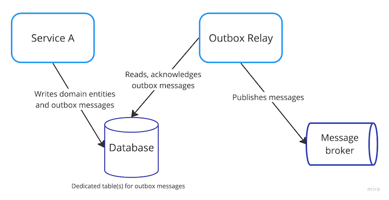
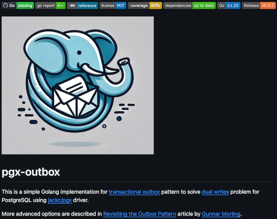
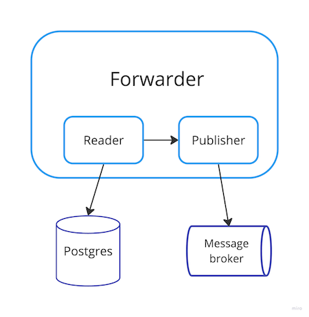
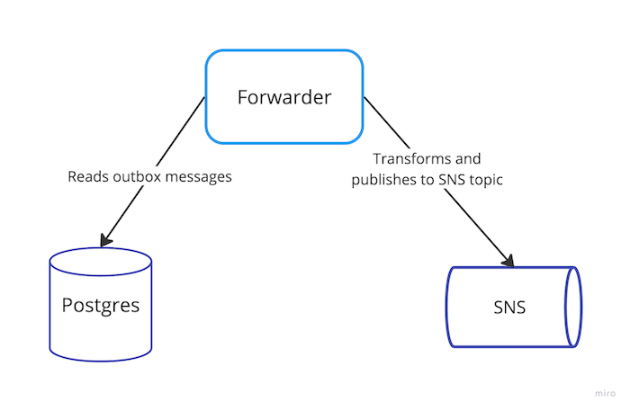
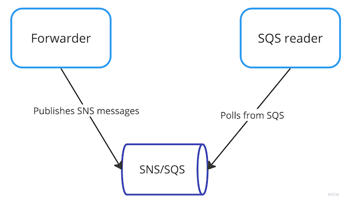

Transactional outbox pattern
Helsinki Gophers meetup
22 Jan 2025
Nikolay Kuznetsov
@nikolayk812
About me
Senior software engineer @Zalando Oy
C → Java → Kotlin → Go
Conference speaker in 2019/20
ice-skating, kayaking, hiking, chess
learning Finnish, Swedish, Italian
About Zalando
Go-to-destination for fashion and lifestyle in Europe
25 countries, ~50 millions active customers
9 tech hubs, including Helsinki with ~150 employees
Dual write problem

Dual write problem
- ServiceA avoids direct sync HTTP/gRPC calls to ServiceB
- Data consistency challenge if one of writes fails
- Messages could be events notifications and state transfers
- Databases: PostgreSQL, MySQL, MariaDB, etc
- Message brokers: Kafka, SNS, NATS, etc
Naive solutions
- Write to DB first, then write to broker
- Write to broker first, then write to DB
- Write to broker from a DB transaction, then commit
Database first
Message broker first
Message from transaction
Proper solutions
- Transactional outbox pattern
- Change data capture (CDC)
- Mix of them
Transactional outbox pattern
Transactional outbox pattern
- + Atomicity: domain entity vs outbox message
- + At least once delivery to message broker
- - Boilerplate code, deployment unit (cronjob)
- - Message consumer might need to deduplicate
- - Outbox table polling introduces delay
- - Autovacuum settings tuning
Change data capture intro
keywords: write ahead log (WAL), logical replication, Debezium
- + Works on business and/or outbox tables
- + Near real time
- + No need for explicit SELECT/UPDATE
- - Complex low-level protocol
- - Not many mature products in Go ecosystem, AFAIK
pgx-outbox
pgx driver
- for Postgres, high performance
- 11K stars at GitHub
- different interface from database/sql
- can be adapted to database/sql
- lib/pq is in maintenance mode
Outbox message
type Message struct {
ID int64 // generated by Postgres
Broker string `validate:"required"`
Topic string `validate:"required"`
Metadata map[string]string // optional
Payload []byte `validate:"required,json"`
}
Outbox table
--table name is customizable
CREATE TABLE IF NOT EXISTS outbox_messages
(
id BIGINT PRIMARY KEY GENERATED ALWAYS AS IDENTITY,
broker TEXT NOT NULL,
topic TEXT NOT NULL,
metadata JSONB,
payload JSONB NOT NULL,
created_at TIMESTAMP DEFAULT CURRENT_TIMESTAMP NOT NULL,
published_at TIMESTAMP
);Outbox writer
type Writer interface {
// Tx is empty interface to support both pgx.Tx and *sql.Tx
Write(ctx, tx Tx, message Message) (int64, error)
// pgx transaction only to invoke SendBatch and Prepare methods
WriteBatch(ctx, tx pgx.Tx, messages []Message) ([]int64, error)
}Add outbox writer
type repo struct {
pool *pgxpool.Pool
// new fields to use pgx-outbox
writer outbox.Writer
messageMapper ToMessageFunc[User] // can be a param instead
}
Use outbox writer
func (r *repo) CreateUser(ctx, user User) (u User, txErr error) {
// create a transaction, commit/rollback in defer()
user, err = r.createUser(ctx, tx, user) // INSERT INTO users
if err != nil {
return u, fmt.Errorf("createUser: %w", err)
}
message, err := r.messageMapper(user)
// if err != nil {
_, err = r.writer.Write(ctx, tx, message) // INSERT INTO outbox_messages
// if err != nil {
return user, nil
}
Transaction handling
func (r *repo) CreateUser(ctx, user User) (u User, txErr error) {
tx, commitFunc, err := r.beginTx(ctx) // pool.Begin(ctx)
// if err != nil {
defer func() {
// commit or rollback depending on txErr
if cErr := commitFunc(txErr); cErr != nil {
txErr = fmt.Errorf("commitFunc: %w", cErr)
}
}()
user, err = r.createUser(ctx, tx, user)
Demo outbox writer
Demo results
Message relay
Outbox forwarder
type Forwarder interface {
Forward(ctx, limit int) (ForwardOutput, error)
}
type forwarder struct {
reader Reader
publisher Publisher
filter MessageFilter // optional
}
Demo outbox forwarder
Demo results
Demo SQS reader
Demo results
Demo recap
pgx-outbox recap
Simple, generic, extensible
Writer supports pgx and database/sql tx
Reader, Forwarder use pgx
Test coverage 80%
Alternatives
- watermill-sql: SQL Pub/Sub on top of Watermill library
- dataddo/pgq: general queue on top of Postgres
- jackc/pglogrepl: Postgres logical replication, low-level
- Trendyol/go-pq-cdc: CDC for Postgres
- PeerDB: streaming from Postgres to data warehouses, queues
Testing in pgx-outbox
Testcontainers: Postgres, LocalStack modules
Mocks: vektra/mockery
Suite: stretchr/testify/suite
Linters: testifylint
Future plans
Add support for CDC/WAL-based Reader
Investigate capabilities of PeerDB
Q & A
Thank you!
@nikolayk812